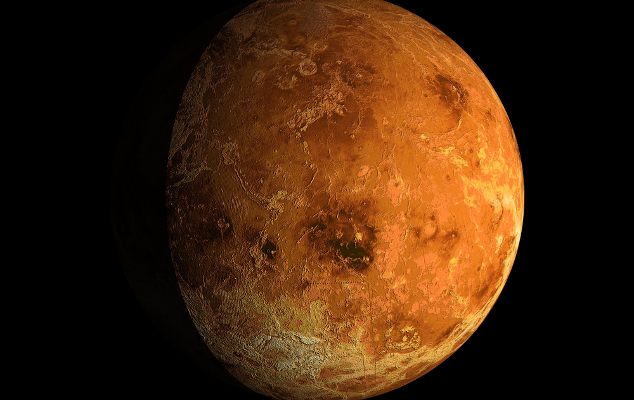

Итак, какова же планета Меркурий и что в ней такого особенного, что отличает ее от других планет?
Наверное, прежде всего, стоит перечислить самое очевидное, что можно легко почерпнуть из разных источников, но без чего человеку будет трудно составить общую картину.
На текущий момент (после того как Плутон был «разжалован» в карликовые планеты) Меркурий является самой маленькой из восьми планет нашей Солнечной системы.
Также планета находится на самом близком расстоянии от Солнца, в связи с чем совершает оборот вокруг нашего светила намного быстрее остальных планет.
Видимо, именно последнее качество и послужило поводом назвать ее в честь самого быстроногого посланника Богов по имени Меркурий,
незаурядного персонажа из легенд и мифов Древнего Рима, обладающего феноменальной скоростью.
Кстати, именно древнегреческие и древнеримские астрономы не раз называли Меркурий как «утренней», так и «вечерней» звездой, хотя в большинстве своем они знали о том, что оба названия соответствуют одному и тому же космическому объекту.
Уже тогда древнегреческий ученый Гераклит указывал на то, что Меркурий и Венера совершают свое вращение вокруг Солнца, а не вокруг Земли.
Возврат на главную страницу